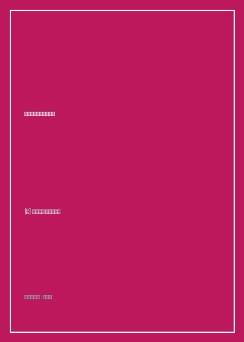

《古拉格群岛》

总体观点
《古拉格群岛》（The Gulag Archipelago）是一部用白骨与冻土浇铸的受难史诗。索尔仁尼琴借用地理学‘群岛’这一残酷隐喻，将遍布苏联全境、由铁丝网与岗楼隔绝的成千上万座劳改集中营（GULAG），描绘为一个潜藏在正常大陆生活地表之下的‘黑色隐形群岛’。通过地下蒸汽船（押解闷罐车）与黑乌鸦（午夜囚车），数以千万计的无辜公民被悄无声息地从日常生活中连根拔起，吞没入这个人类文明史上规模最庞大的极权奴工劳改宇宙。
古拉格体制绝非斯大林个人的偶发病态狂暴，而是贯穿苏维埃国家机器自列宁契卡时代起就已确立的‘制度性器官与经济支柱’。臭名昭著的苏俄刑法第五十八条（反革命罪），以极度宽泛荒谬的口袋罪名（如‘反革命煽动’、‘间谍嫌疑’、‘赞美西方机器’），将一切具备独立人格的知识分子、工农与军人一网打尽。极权体制依赖无偿强迫奴工开凿白海运河、采伐西伯利亚原始森林与挖掘科雷马永冻层金矿，用数百万人的肉体消耗支撑国家重工业乌托邦狂飙。
在非人的集中营苦役与绝对道德堕落的炼狱中，人性展现出了令人落泪的卑劣沉沦与最不可摧毁的精神圣洁。索尔仁尼琴通过自身十一年的囚徒苦役反思，发出了穿透历史的道德警言：‘划开善恶的分界线，并不穿行在国家之间，也不穿行在阶级之间，甚至不穿行在政党之间——它穿行在每一个人的心脏中央。’唯有在受难中坚守良知底线、拒绝出卖灵魂苟活的个体，才能让历史在黑暗中看见希望的微光。
核心观点
-
1. 第五十八条反革命罪的无限罗织网
刑法第五十八条包含了十四个无所不包的子项：哪怕在车间闲聊时无意说了一句‘今年面包排队时间太长’，便被定性为58条第10款（反革命宣传）；甚至一个目睹邻居被捕却保持沉默的无辜者，亦能以‘未予检举罪’被判处十年苦役。
一位钟表修理匠在维修克里姆林宫座钟时不小心拧断了发条，当场被国家安全部指控为‘企图通过机械破坏瘫痪苏维埃最高中枢’，流放北极二十五年。 -
2. 白海-波罗的海运河的奴工血泪骨架
1931年斯大林强令在二十个月内全靠纯手工工具开凿连接白海与波罗的海的巨型人工运河。数十万囚徒在零下三十度严寒中手持铁镐铁锹刨开坚冰，每天死于严寒、饥饿与斑疹伤寒者数以千计，运河两岸堤坝每一公尺都填埋着犯人的白骨。
索尔仁尼琴亲访白海运河遗址：这条耗费十万生命换来的工程由于仓促工期水深仅有三米，大型现代军舰根本无法通行，成为极权狂妄虚荣在冰原上留下的巨大荒诞伤疤。 -
3. 刑讯室里的流水作业与意志崩溃
契卡与内务人民委员部发展出一整套旨在‘彻底粉碎人格尊严与生理防线’的现代刑讯流水线：车轮战连续数天数夜不准睡眠、剥夺饮水、强光灯直射瞳孔、在冰冷狭窄仅容站立的木盒中关押数日，逼迫囚徒在事先打好的荒诞认罪书上签字画押。
一位老布尔什维克革命家在连续受审七天七夜出现严重幻觉、双腿肿胀如水桶溃烂后，为了能换取‘趴在地板上睡上十分钟’的微小恩赐，痛哭在承认自己是‘英国日本双料间谍’的假材料上颤抖签字。 -
4. 小偷（刑事犯）对政治犯的合法骑劫
劳改营管理当局推行残酷的‘以毒攻毒’分化政策：将杀人犯、惯偷等真正的社会危险分子封为‘阶级同盟者（社会亲善分子）’，赋予其担任牢头狱霸的特权，任由其掠夺、殴打、强奸被扣上‘反革命政治犯’帽子的科学家、教授与良家平民。
描写押解车厢内的惨剧：刑事惯偷将学者身上御寒的毛衣与皮靴暴力剥光分赃，老教授在零下四十度裸露双脚瑟瑟发抖冻死，押送兵冷眼旁观甚至分润赃物。 -
5. 善恶在每一个人胸膛里的自我审判
索尔仁尼琴不仅审判施暴者，更以惊人的宗教虔诚残酷审判曾经的‘自己’。他回忆自己作为炮兵大尉在红军服役时，也曾趾高气扬地支使勤务兵、享受军官特权，直到戴上手铐坠入囚徒深渊，才在苦难中完成了良知的痛苦涅槃。
全书最震撼的忏悔篇章：‘正是在古拉格冰冷的破木板床上，在饥肠辘辘的苦役中，我生平第一次领悟到了生命的真理：感谢你，监狱，感谢你曾存在于我的生命中，让我学会了区分善与恶！’
全书结构
-
第一部 监狱工业：逮捕、审讯与黑色乌鸦
深入极权捕鲸机的微观齿轮：午夜敲门声、突击搜查、列车押解、卢比扬卡地下室三十一种刑讯逼供，剖析平民为何在被捕瞬间丧失抵抗本能。
记录一位母亲在为发高烧的幼儿冲调牛奶的瞬间被破门而入的契卡带走，孩子孤零零留在冰冷房间哭号，展现暴力入侵私人领域的突兀残酷。 -
第二部 永恒的运动：运送列车与中转站
全景描绘苏联铁路网上的‘囚车大迁徙’：塞满上百人无法转身的铁皮闷罐车、酷暑脱水、极寒冻毙，以及遍布各大交通枢纽的人间地狱中转监狱。
还原横跨西伯利亚大铁路长达一个月的押解旅程：犯人们每天靠分发的一捧发霉黑面包与一勺浑水维持呼吸，每到一个小站便从车门抛出数具冻硬的死尸。 -
第三部 毁灭与苦役：白海运河到科雷马金矿
全书核心篇章，细述劳改营日常制度：十二小时重体力伐木、定量口粮配给制（大包面小包面惩罚饥饿法）、工伤冻伤，以及白海运河的疯狂大干快上。
科雷马金矿极昼苦役实录：犯人们在永冻土层下两米深的泥泞坑道中淘金，双眼因坏血病失明，手指脚趾因坏死发黑整截脱落。 -
第四部 灵魂与带刺铁丝网：沉沦与抗争
深入囚犯的精神世界，记录卑劣告密者的无耻背叛与高贵圣徒的舍生取义，探讨在剥夺一切外部尊严后人类灵魂如何守护内心神圣圣殿。
记录一位乡村东正教神父在集中营暗中主持临终祈祷，哪怕面临加刑十年枪毙的威胁，依然从容为垂死难友抹油安息的圣洁光芒。 -
第五部 苦役劳改营与流放地：肯吉尔暴动与破晓
总结全书，记录斯大林死后肯吉尔特别劳改营数万囚犯发起的壮烈反抗暴动，直面赫鲁晓夫平反后的历史遗存，向全人类发出拒绝遗忘的永恒誓言。
全景复盘肯吉尔暴动四十分钟决死时刻：男犯与女犯手挽手组成人墙高唱自由战歌，阻挡苏军T-34坦克履带的无情碾压，书写了不自由毋宁死的绝顶悲壮。